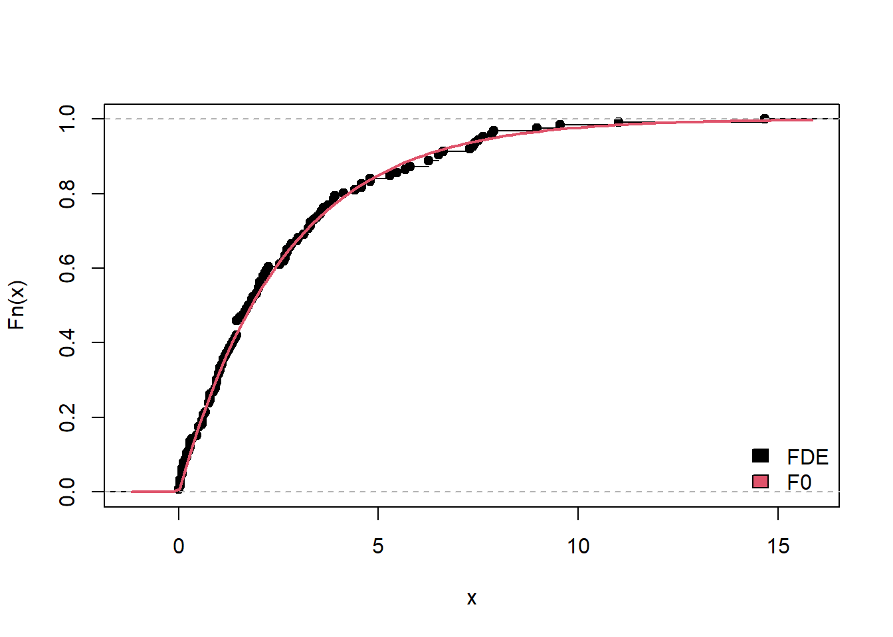
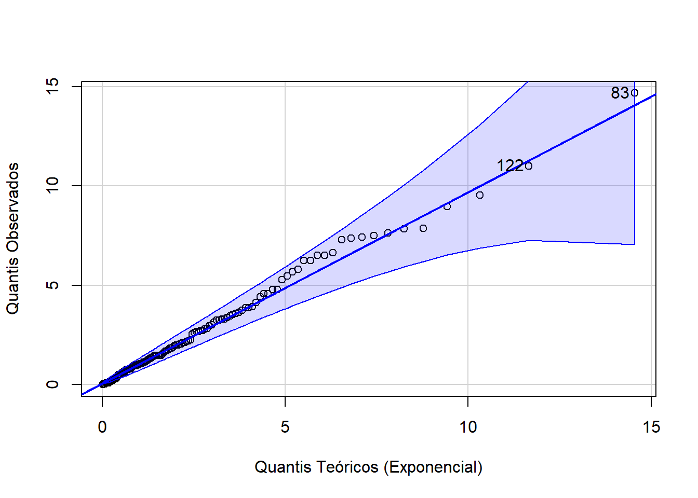
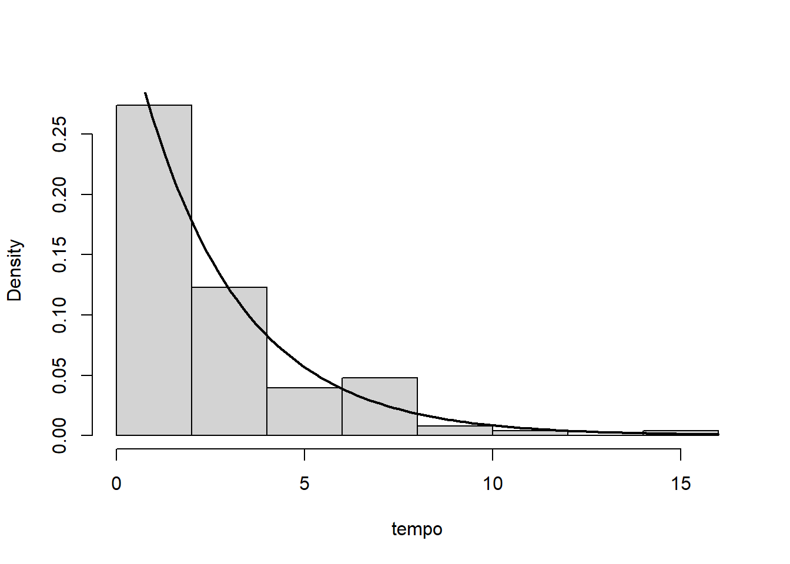
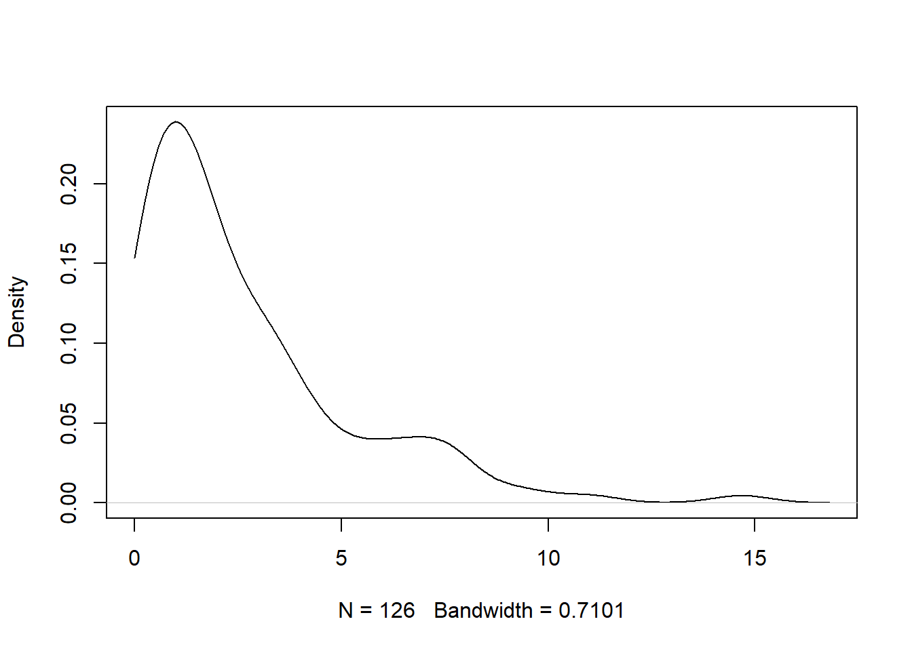
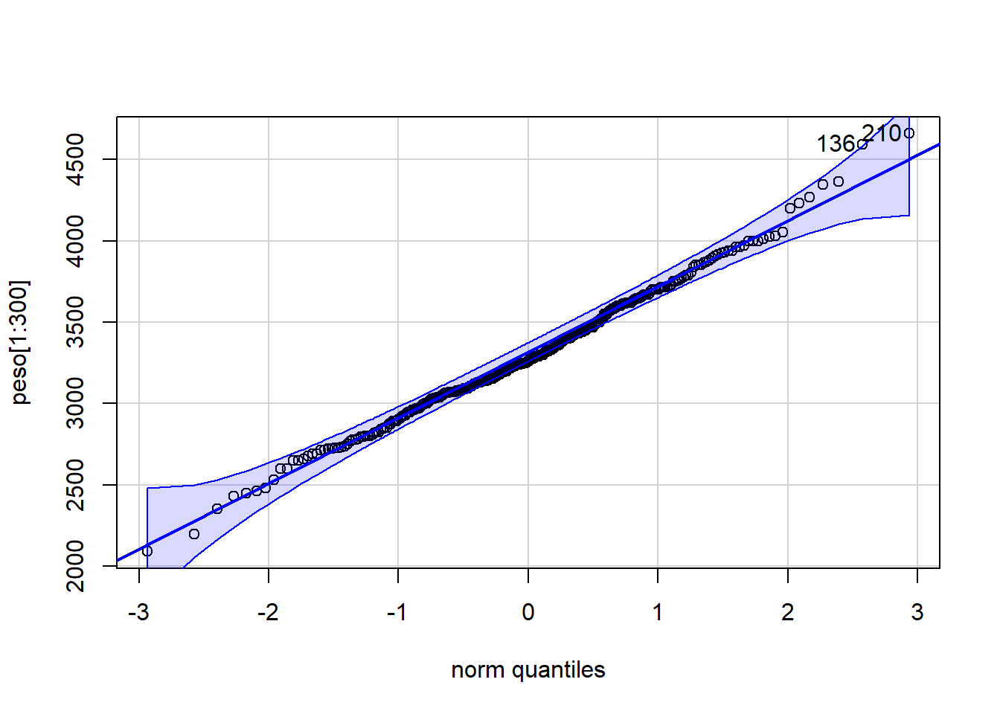

require(gsheet)Carregando pacotes exigidos: gsheeturl <- 'https://docs.google.com/spreadsheets/d/1UUoNR7yDcFjwag3z3C5Ime0oaRCTjTomOaegFnUU-ZU/edit?usp=sharing'
tempo <- data.frame(gsheet2tbl(url))
tempo <- tempo[,1]Seja \(X_1,\ldots,X_n\) uma amostra aleatória do modelo \(F\), deconhecido. Qualquer teste de hipóteses cuja hipótese nula é do tipo
\[H_0:X\sim F_0,\] é denominado teste de aderência, onde \(F_0\) é o modelo suposto ser o verdadeiro.
Atravéz da função de distribução empírica \(\hat{F}_n\), as estatísticas de testes para os testes de aderência são dada por \(U_n=D(\hat{F}_n,F_0)\), onde \(D\) é algum tipo de distância. Deste modo, valores elevados de \(U_n\) dão evidências contra \(H_0\). A distribuição de \(U_n\) é obtida supondo \(H_0\) verdadeira o o p-valor é calculado por \(P(U_n\geq u_{obs}).\) Então, rejeitamos a hipótese nula se o p-valor for pequeno.
Embora os testes de aderência sigam a metodologia usual dos testes de hipóteses, note que o objetivo geral é não rejeitar a hipótese nula. De fato, identificar o modelo \(F_0\) como verdadeiro em geral está relacionado com a necessidade de realizar alguma inferência dependente deste modelo. Portanto, o teste de aderência é uma ferramenta para justificar a escolha de \(F_0\) para a análise dos dados. Esta é uma das poucas classes de testes de hipóteses na qual existe o desejo de se obter um p-valor não significativo.
Deste modo, o erro tipo II é o tipo de erro de maior interesse. Contudo, é impossível calcular a função poder deste teste, pois deveriamos ser capazes de calcular a distribuição \(U_n\) para todo \(F\in\mathcal{F}_{\Omega}\). O fato de não poder controlar o erro tipo II gera as seguintes consequências:
Portanto, testes de aderência sempre devem estar acompanhados de gráficos que permitam a comparação visual entre \(\hat{F}_n\) e \(F_0\). Os gráficos mais usuais são:
QQ-plot: apresentam os quantis amostrais contra os quantis de \(F_0\)
Histogramas (para densidades) ou estimativas de densidade via método do núcleo com a densidade de \(F_0\) sobreposta
A função de distribuição empírica com \(F_0\) sobreposta.
Example 8.1 Os dados abaixo apresentam os tempos entre suicídios no Amazonas em 2024. Vamos utilizar a função histogram do pacote de mesmo nome.
require(gsheet)Carregando pacotes exigidos: gsheeturl <- 'https://docs.google.com/spreadsheets/d/1UUoNR7yDcFjwag3z3C5Ime0oaRCTjTomOaegFnUU-ZU/edit?usp=sharing'
tempo <- data.frame(gsheet2tbl(url))
tempo <- tempo[,1]Sabe-se que este tipo de dados costuma ter distribuição exponencial e deseja-se testar se ele seguem a distribuição Exponencial\((0,38)\).
Abaixo apresentamos as três opções gráficas discutidas. Seguem alguns detalhes:
O primeiro gráfico apresenta a função de distribuição empírica contra a função de distribuição da exponencial. Como \(\hat{F}_n\) tem dificuldade de estimação nas caudas, o objetivo aqui é observar se a parte central das duas funções estão próximas
O segundo gráfico é o QQ-plot, utilizando a função qqPlot do pacote car. Qualquer distribuição do R que esteja implemendada com o prefixo q pode ser utilizada. Observe que o gráfico apresenta dois números. Por padrão, as duas observações com maior valor são colocadas no gráfico. Nesse gráfico, espera-se que todas os pontos oscilem em torno da reta.
O terceiro gráfico apresenta o histograma em conjunto com a função densidade.
# Função de distribuição empírica contra F_0
Fn_chapeu <- ecdf(tempo)
F0 = function(x) pexp(x, rate = 0.38)
plot(Fn_chapeu, main = '')
curve(F0(x), add = T, col =2, lwd = 2)
legend('bottomright',c('FDE','F0'),fill=c(1,2), bty='n')
# QQ plot
library(car)Carregando pacotes exigidos: carDataqqPlot(tempo, distribution = "exp", rate = 0.38,
main = "",
xlab = "Quantis Teóricos (Exponencial)",
ylab = "Quantis Observados")
[1] 83 122## Hisograma
hist(tempo, freq = FALSE, main = '')
curve( dexp(x, .38), add = T, lwd = 2)
Seja \(X_1,\ldots,X_n\) uma amostra aleatória de um modelo discreto. Podemos organizar a amostra observada em um tabela de contingência com uma entrada, onde cada classe corresponde aos números entre o mínimo e o máximo da amostra.
Sem perda de generalidade, assuma que a amostra observada varia de 1 a \(K\), resultando portanto em \(K\) classes. Seja \(O_j\) a frequência de valores \(j\) na amostra.
Considere a hipótese \(H_0:X\sim F_0\). Se \(H_0\) é verdadeira, a probabilidade de observar o valor \(j\) é \(P_0(X=j)\), onde \(P_0\) é a função de probabilidade associada ao modelo \(F_0\). Então, para a amostra de tamanho \(n\), a frequência esperada do valor \(j\) na amostra é \(E_j=nP_0(X=j)\). Então, a estatística do teste Qui-quadrado para aderência é dada por
\[Q=\sum_{j=1}^K\frac{(O_j-E_j)^2}{E_j},\] onde, sob \(H_0\), \(Q\approx \chi^2_{k-1}\).
Example 8.2 No curso de estatística, existe a hipótese de que a probabilidade de um aluno ser aprovado em Cálculo 1 é de \(1/3\), seguindo uma distribuição de Bernoulli(\(1/3\)). No ano de 2025, uma turma com 18 alunos frequentou o curso e 5 foram aprovados. Considerando a aprovação como sucesso (1) e a reprovação como fracasso (0), temos a seguinte tabela de frequências observadas e esperadas:
\[\begin{array}{c|cc}\hline \text{Resultado} & \text{0} & \text{1} \\ \hline O_j & 13 & 5 \\ E_j & 12 & 6 \\ \hline\end{array}\]
A estatística do teste Qui-quadrado para aderência é dada por
\[Q=\frac{(13-12)^2}{12}+\frac{(5-6)^2}{6}=0,25\]
Como temos \(K=2\) classes, o teste possui \(K-1 = 1\) grau de liberdade. O p-valor pode ser calculado no R por
1 - pchisq(0.25, df = 1)[1] 0.6170751ou, alternativamente, utilizando a função nativa:
chisq.test(c(13, 5), p = c(2/3, 1/3))
Chi-squared test for given probabilities
data: c(13, 5)
X-squared = 0.25, df = 1, p-value = 0.6171O p-valor elevado (aproximadamente \(0,617\)) nos leva a não rejeitar a hipótese nula. Portanto, há evidências de que o perfil de aprovação dos alunos se adere à distribuição proposta.
Seja \(X_1,\ldots,X_n\) uma amostra aleatória de um modelo contínuo. Seja \(H_0: X\sim F_0\). Considere o módulo da seguinte diferença:
\[|\hat{F}_n(x)-F_0(x)|\] Se o modelo \(F_0\) é adequado, então \(U(x)\) deve ser pequena para todo \(x\). A estatística do teste de Kolmogorov-Smirnov é baseada no maior valor desta diferença, sendo dada por
\[D_n=\sup_x |\hat{F}_n(x)-F_0(x)|.\] A lógica é simples: se a maior das diferenças é baixa, então todas as diferenças são baixas. Na prática, são calculadas as estatísticas
\[\begin{align}D_+&=\sup_x(\hat{F}_n(x)-F_0(x))\\ D_-&=\sup_x(F_0(x)-\hat{F}_n(x))\end{align}\] sendo \(D_n=\max\{D_+,D_-\}\). Para apresentar a vantagem deste teste, vamos considerar apenas a estatística \(D_+\). Observe que
\[\begin{align}\hat{F}_n(x)-F_0(x)=\sum_{i=1}^n \frac{1}{n}I_{(-\infty,x]}(x_{(i)})-F_0(x)\end{align}\] Defina \(x_{(n+1)}=+\infty\). Para \(x\in[x_{(i)},x_{(i+1)})\), teremos \[\hat{F}_n(x)-F_0(x)=\frac{i}{n}-F_0(x),\] e, como \(-F_0(x)\) é monótona decrescente, teremos \[\sup_{x\in[x_{(i)},x_{(i+1)})}\hat{F}_n(x)-F_0(x)=\frac{i}{n}-F_0(x_{(i)}).\] Portanto, \[\begin{align}D_+&=\sup_{x}(\hat{F}_n(x)-F_0(x))=\max_{1\leq i\leq n}\sup_{x\in[x_{(i)},x_{(i+1)})}\left(\frac{i}{n}-F_0(x)\right)\\&=\max_{1\leq i\leq n}\left(\frac{i}{n}-F_0(x_{(i)})\right)\end{align}.\] logo, \(D_+\) depende apenas de \(X_{(1)},\ldots,X_{(n)}\). Sob \(H_0\), é fato que \(F(X_{(i)})\) tem distribuição Beta(\(i,n-i+1\)), o que permite o cálculo do p-valor.
Example 8.3 Considere novamente o exemplo Example 8.1 onde a hipótese nula era de que \(X\sim\hbox{Exponencial}(0,38)\). Vamos utilizar a função ks.test do R.
ks.test( tempo, 'pexp', rate = .38)Warning in ks.test.default(tempo, "pexp", rate = 0.38): não devem existir
empates no teste de Kolmogorov-Smirnov de apenas uma amostra
Asymptotic one-sample Kolmogorov-Smirnov test
data: tempo
D = 0.034868, p-value = 0.998
alternative hypothesis: two-sidedCom um p-valor de 0,998, não rejeitamos a hipótese de que os dados seguem a distribuição Exponencial(0,38).
Seja \(X_1,\ldots,X_n\) uma amostra aleatória de um modelo continuo e seja \(H_0:X\sim F_0\). Enquanto o teste de Kolmogorov-Smirnov procura pelo maior desvio de \(|\hat{F}_n(x)-F_0(x)|\) a classe de estatísticas de Cramér-von Mises realizar o teste com a estatística
\[W^2 = n \int_{-\infty}^{\infty} [\hat{F}_n(x) - F_0(x)]^2 \psi(x) f_0(x)dx,\]
onde \(f_0(x)\) é a função densidade de \(F_0\) e \(\psi(x)\) é denominada função de peso, cujo objetivo é determinar qual parte da distribuição receberá mais atenção do teste. Note que a lógica do teste permanece a mesma: a hipótese nula é rejeitada para valores elevados de \(W\).
O teste de Anderson-Darling é um teste dentro desta classe que utiliza \[\phi(x)=\frac{1}{F_0(x)(1-F_0(x))},\] gerando a estatística
\[A^2=n\int_{-\infty}^\infty \frac{[\hat{F}_n(x)-F_0(x)]^2}{F_0(x)(1-F_0(x))}f_0(x)dx\] Note que \(\phi(x)\) tem o formado de U, mostrando que esse teste é mais rigoroso no comportamento nas caudas da distribuição. A estatística \(A^2\) possui uma vantagem computacional. Observe que, se \(x\in[x_{i},x_{(i+1)})\) então \(\hat{F}_n(x)=i/n\). Seja \(x_{(0)}=-\infty\). Então,
\[\begin{align}A^2&=n\int_{-\infty}^\infty \frac{[\hat{F}_n(x)-F_0(x)]^2}{F_0(x)(1-F_0(x))}f_0(x)dx\\&=n\sum_{i=0}^n \int_{x_{(i)}}^{x_{(i+1)}}\frac{\left[\frac{i}{n}-F_0(x)\right]^2}{F_0(x)(1-F_0(x))}f_0(x)dx. \end{align}\]
Considerando a transformação \(u=F_0(x)\) (o que implica em \(u=F_0^{-1}(x)\), snedo \(u_{(i)}=F^{-1}_0(x_{(i)})\) o quantil \(i\)) na integral acima, teremos
\[\begin{align}A^2&=n\sum_{i=0}^n \int_{x_{(i)}}^{x_{(i+1)}}\frac{\left[\frac{i}{n}-F_0(x)\right]^2}{F_0(x)(1-F_0(x))}f_0(x)dx\\&=n\sum_{i=0}^n \int_{u_{(i)}}^{u_{(i+1)}}\frac{\left[\frac{i}{n}-u\right]^2}{u(1-u)}du\\ \end{align}\] e, como \[\int \frac{(a-u)^2}{u(1-u)}du=a^2\log|u|-\left(a-1\right)^2\log |1-x|-x+\text{constante}\] teremos que, após algumas operações, e substituindo \(u_{(i)}\) por \(F_0(x_{(i)}),\) teremos
\[A^2=-n-\frac{1}{n}\sum_{i=1}^n(2i-1)\left[\log(F_0(x_{(i)})+\log(1-F_0(x_{(n-i+1)})\right].\]
Example 8.4 Considere novamente o exemplo Example 8.1 onde a hipótese nula era de que \(X\sim\hbox{Exponencial}(0,38)\). Vamos utilizar a função ad.test do pacote goftest.
require(goftest)Carregando pacotes exigidos: goftestad.test( tempo, 'pexp', rate = .38)
Anderson-Darling test of goodness-of-fit
Null hypothesis: exponential distribution
with parameter rate = 0.38
Parameters assumed to be fixed
data: tempo
An = Inf, p-value = 4.762e-06Com um p-valor muito pequeno, rejeitamos a hipótese de que os dados seguem a distribuição Exponencial(0,38). Observe que essa conclusão difere do teste de Kolmogorov-Smirnov. Isso ocorre por causa do olhar mais atento para a cauda da distribuição. A figura abaixo apresenta o gráfico da densidade estimada pelo método do núcleo, no qual pode-se observar uma pequena moda na cauda da distribuição, entre 5 e 10 (é possível perceber essa diferença nos gráficos dados no começo da seção e é recomendável que você olhe atentamente esse intervalo em cada um deles).
plot(density(tempo, from = 0), main = '')
O registro de óbitos por suicídio é tipicamente vulnerável a vieses de subnotificação e má classificação. Isso pode gerar um acúmulo artificial de dados na cauda, gerando uma mistura, o qual se manifesta graficamente como a pequena moda observada no gráfico acima. Portanto, a rejeição pelo teste de Anderson-Darling não necessariamente invalida o modelo Exponencial como uma boa aproximação mecânica para a maioria dos casos, mas mostra como a sensibilidade deste teste com as caudas pode detectar anomalias como a má classificação nos dados.
Seja \(X_1,\ldots,X_n\) uma amostra aleatória e considere a hipótese \(H_0:X\sim\hbox{Normal}(\mu,\sigma^2)\) (observe que aqui, a hipótese nula é a família das normais, ou seja, \(\mu\) e \(\sigma^2\) não são especificados).
Para entender o teste de Sharipo-Wilk, note que se a hipótese nula \(H_0\) é verdadeira, cada estatística de ordem \(X_{(i)}\) pode ser escrita como uma transformação linear de uma variável normal padrão correspondente
\[X_{(i)} = \mu + \sigma m_i + \epsilon_i\] onde \(m_i\) é o valor esperado da \(i\)-ésima estatística de ordem de uma distribuição Normal Padrão (\(N(0,1)\)) e \(\epsilon_i\) é um termo de erro. Se nós plotarmos \(X_{(i)}\) (no eixo Y) contra \(m_i\) (no eixo X), deveríamos ver uma linha reta perfeita com inclinação próxima a \(\sigma\). Deste modo, é possível estimar \(\sigma\) pelo método dos mínimos quadrados generalizados, obtendo
\[\hat{\sigma}^2_{reg}\propto \left(\sum_{i=1}^n a_iX_{(i)}\right)^2,\] onde \(a_i\) é função de \(m_i\) e da matriz de covariância das estatística de ordem da normal. Por outro lado, sabemos que \(\sigma\) é bem estimado pela variância amostral, ou seja,
\[\hat{\sigma}\propto \sum_{i=1}^n(X_i-\bar{X})^2.\] A estatística do teste de Shapiro-Wilk é dada por \[W=\frac{\left(\sum_{i=1}^n a_iX_{(i)}\right)^2}{\sum_{i=1}^n(X_i-\bar{X})^2},\] e pode-se provar que \(W\in[0,1]\). Se os dados forem normais, então as duas estimativas de \(\sigma^2\) estarão próximas e \(W\approx 1\). Caso contrário, a estimativa \(\hat{\sigma}^2_{Reg}\) colapsa, subestimando a variânica. Portanto, valores pequenos de \(W\) rejeitam a normalidade.
Sob \(H_0\), a distribuição de \(W\) não depende de \(\mu\) e \(\sigma\) e ela foi tabulada pelo Método de Monte Carlo para \(n\leq 50\). Para \(n\) entre 50 e 5.000, Royston mostrou que existem transformações de \(W\) que se aproximam da normal padrão.
Example 8.5 A base de dados abaixo mostra o peso, em gramas de 37.439 recém-nascidos no Amazonas no ano de 2022.
url <- 'https://docs.google.com/spreadsheets/d/1mEpPFyVaU3DjwYvWGhZDS_0EsESLRERSed475P-_29U/edit?usp=sharing'
require(gsheet)
peso <- gsheet2tbl(url)
# removendo os pesos vazios
peso <- peso[ is.na(peso) == FALSE ]Vamos testar a normalidade da amostra composta pelo 300 primeiros valores, através do teste de Shapiro-Wilk.
shapiro.test(peso[1:300])
Shapiro-Wilk normality test
data: peso[1:300]
W = 0.99375, p-value = 0.2513library(car)
qqPlot(peso[1:300], 'norm')
[1] 210 136